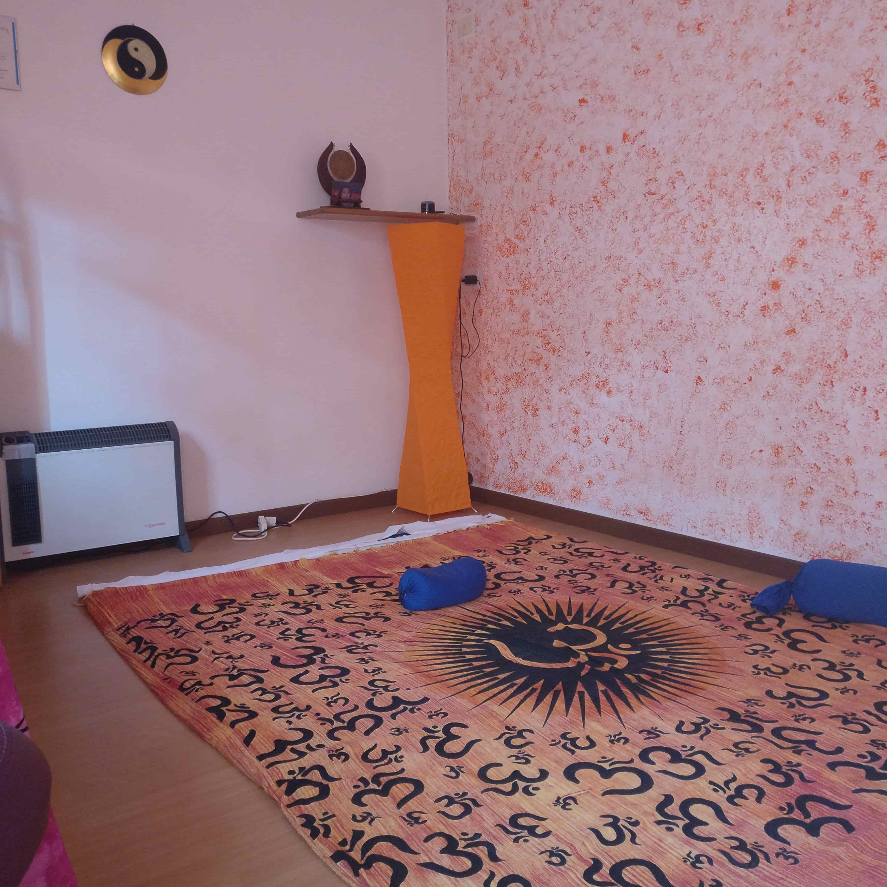
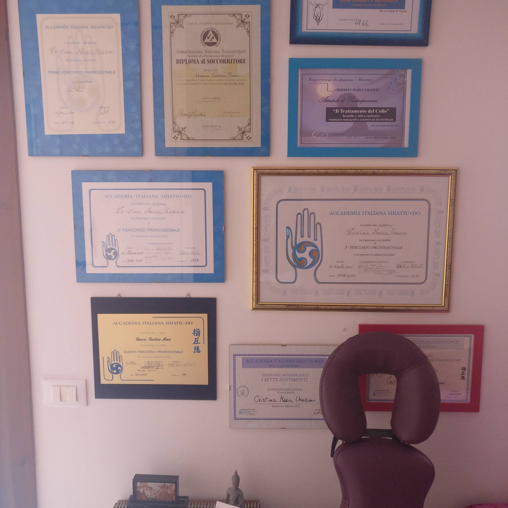
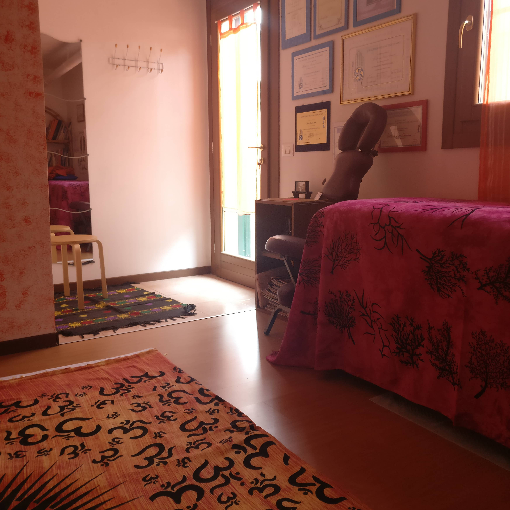
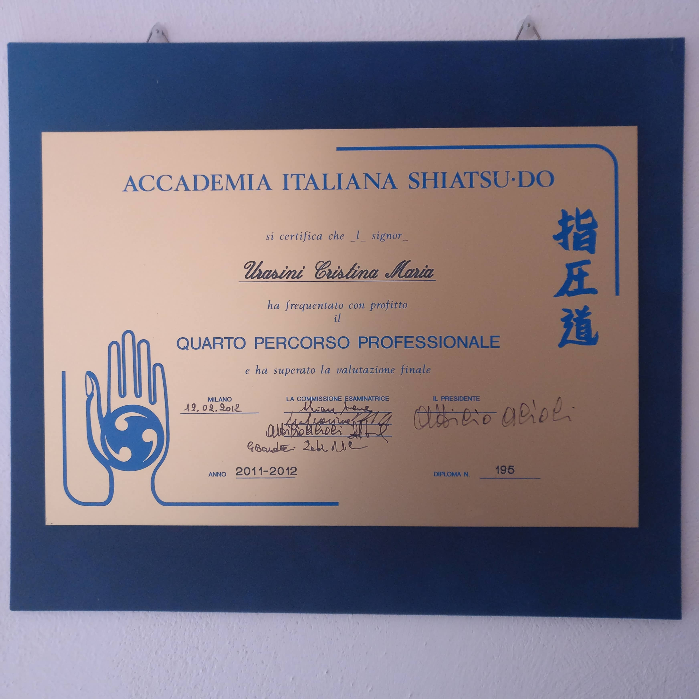

Mi sono diplomata presso Accademia Italiana Shiatsu-Do di Milano e sono
Operatrice Professionale certificata da APOS.
Pratico lo Shiatsu, secondo la tradizione giapponese, a terra sul “futon” con
il ricevente comodamente vestito.
Adatto a tutti, lo Shiatsu non mira a guarire, ma attraverso il contatto e le
pressioni valorizza le risorse vitali di chi lo riceve.
Telefono:
Scrivimi



